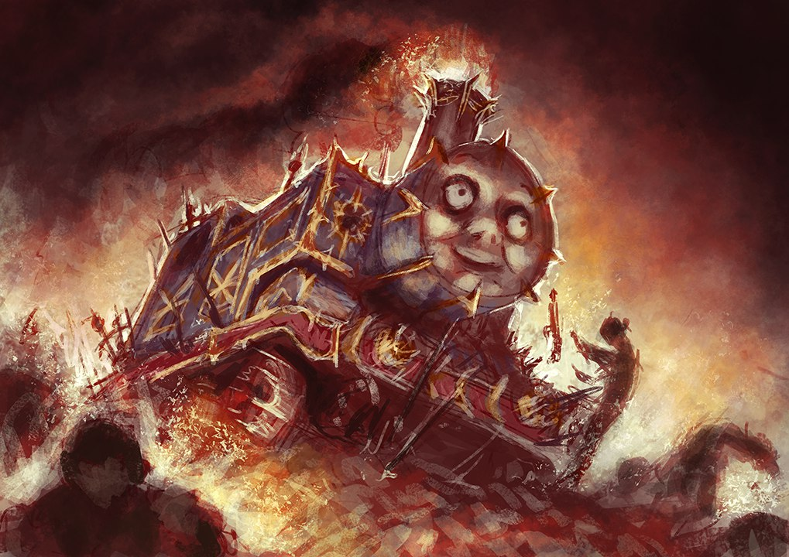
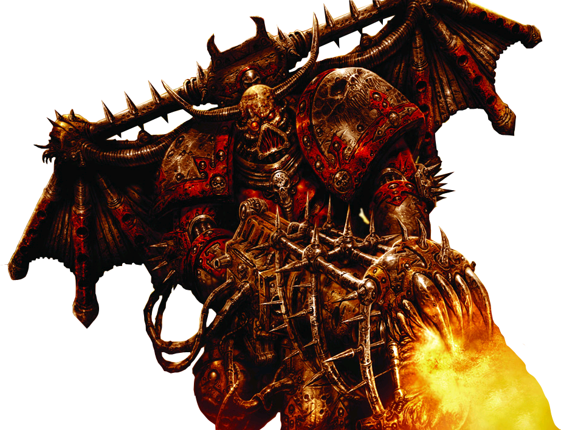

Chaos

Chaos, also known to its servants as the Primordial Truth or the Primordial Annihilator, and to the Imperium of Man as the Archenemy, is the universal and usually malign metaphysical force embodied by the malevolent intelligent entities comprised of psychic energy that live in the Immaterium.
The entities who embody Chaos are mostly daemons, but the term also encompasses those mortals who have thrown in their lot with Chaos, ranging from simple peasants and/or manufactorum labourers who serve as Chaos Cultists, to Traitor Imperial Guardsmen, planetary militia, Imperial nobles, Planetary Governors, and even the mighty Chaos Space Marines and Traitor Titan Legions of the Dark Mechanicum.
Chaos is also itself the turbulent psychic energy that comprises the alternate dimension known as the Immaterium and gives shape to the nightmare domains of the individual Chaos Gods that are collectively called the Realm of Chaos by savants of the Inquisition.
Chaos is almost synonymous with the Warp -- the two concepts are inseparable, for Chaos is the limitless ocean of spiritual, psychic and emotional energy that defines the Immaterium and underlies the 4-dimensional material universe of space-time.
Chaos is a great and raw force of change and power, and is both physically and spiritually corrupting, though it is not in itself necessarily "evil."

While its adherents and servants act in ways that are often malevolent, some devotees of Chaos are more dedicated to the service of freedom and change than of the pure selfishness that Humanity and most other intelligent species define as nefarious.
However, more often than not, the Chaos Gods reward individual accomplishment in such a way that the ends justify the means, and the absence of hierarchy and emphasis on individual freedom leads to the pursuit of excess and personal aggrandisement that can only be characterised as damnation.
The most evolutionarily-advanced mortals, psykers, can utilise this energy, thus making them capable of abilities which transcend the standard physical laws of the material universe as humanity understands them. However, the malevolent power of Chaos can gradually corrupt a psyker, tainting his mind and body and turning him into the slave of the Ruinous Powers.
The most powerful entities of Chaos are the four great Chaos Gods, also known as the Ruinous Powers, who each embody one aspect of the greater force of Chaos and can be worshipped individually or as an entire pantheon known as "Chaos Undivided."
The iconic symbol of Chaos is the eight-pointed star, representing the infinite possibilities of Chaos. Ultimately, Chaos and its entities seek nothing less than the complete destruction of the material universe, so that all of Creation is once more consumed by the primordial and uncontained energies of Chaos.
In general, Chaos is a malevolent spiritual force that represents the collective negative aspects of the psyches of every sentient being in the Milky Way Galaxy, and most likely in the wider universe.
Because Mankind is by far the most populous intelligent species in the galaxy of the late 41st Millennium, the Chaos Gods particularly embody Humanity's myriad and particular flaws as a people.

Chaos corrupts Mankind so easily because it speaks to the character flaws inherent in every man and woman and seeks to exploit the weaknesses of their all-too-human natures. It takes an extraordinary individual of truly iron will and selflessness to resist the serial temptations of Chaos.
It is also these inherent character flaws that produce the rampant physical and anatomical mutations of individuals exposed to Chaos energies, as these mutations are driven by the inner flaws of the person's psyche being made manifest in their physical person as Chaos bridges the gap between the Immaterium and realspace.
With all the obvious dangers associated with Chaos, such as mutation, daemonic possession, and spiritual damnation, some might wonder why anyone would willingly choose to serve the Ruinous Powers. The answer is actually simple. Chaos judges its servants solely on their abilities and their records of success and failure in promoting the agenda of the individual Chaos Gods and of Chaos Undivided as a whole.
Chaos also offers those who serve it the opportunity to perhaps one day wield power and respect far beyond the dreams of most mortals' avarice. For so many people, but particularly in the oppressive, feudal Imperium of Man, where too often family connections and inherited wealth are rewarded rather than ability, and where it is impossible on many worlds for a talented individual to ever better their lot, Chaos actually offers a substantial degree of freedom and the only real meritocracy that they have ever known.
But Chaos is not a benevolent force, and for the vast majority of those who fall to Chaos' temptations, they will never reach either power or position and will be little more than faceless puppets in the endless schemes of the Dark Gods.
While Chaos may reward success with power, even the mightiest Chaos servant becomes a slave of Chaos, never its master. Most who serve Chaos will fail in their quests for power, eventually ending up as possessed Daemonhosts, mindless Chaos Spawn, or simply as just another corpse in the heap, a pawn whose usefulness to the Ruinous Powers has ended.